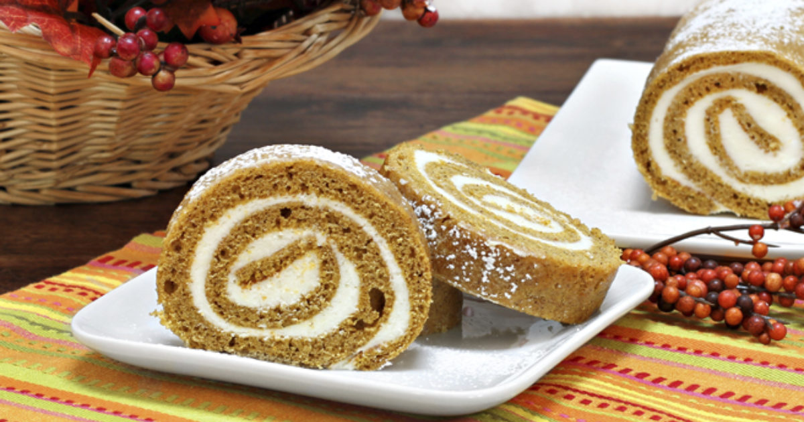

Bring Your Best Fall Game with this Pumpkin Spice Cake Roll
Pumpkin Spice Cake Roll:
Cake rolls and cool weather go hand-in-hand. And when you throw some pumpkin spice into the mix, you’re on autumnal overload in the best possible way!
Recipe:
Ingredients For The Cake:
- Nonstick cooking spray or softened butter for preparing the pan
- 1 cup plus 2 tablespoons cake flour ¾ cup firmly packed dark brown sugar, divided
- 1 ½ teaspoons ground cinnamon
- 1 teaspoon baking powder
- ½ teaspoon ground ginger
- ¼ teaspoon ground nutmeg
- ¼ teaspoon table salt
- 3 large eggs, divided
- 6 tablespoons pumpkin purée, at room temperature
- 7 tablespoons neutral oil (safflower, canola or vegetable)
- 1 teaspoon pure vanilla extract
- Confectioners’ sugar, for dusting
For The Topping
- 6 ounces white chocolate (not chips), chopped
- 3 tablespoons heavy cream
For The Filling
- 8 ounces cream cheese, slightly softened
- 8 tablespoons unsalted butter, softened
- ⅛ teaspoon salt
- ¼ cup honey
- ½ cup confectioners’ sugar, sifted
- 3 tablespoons finely diced pecans or walnuts, toasted, for garnish
Instructions For Make The Cake:
1. Position a rack in the center of the oven and heat to 350 F. Lightly grease the sides and bottom of a 13 x 18 x 1-inch half sheet pan and line the bottom with parchment. Lightly grease and flour the parchment and lightly flour the sides of the pan.
2. Sift the cake flour into a mixing bowl fitted with a paddle attachment. Add the cinnamon, baking powder, ginger, nutmeg, salt and all but three tablespoons of the brown sugar and whisk until well blended.
3. Add the egg yolks, pumpkin, oil and vanilla and beat on medium-low speed until well blended. Increase the speed to medium-high and beat for three minutes, until the mixture lightens in color and forms a ribbon of batter in the bowl when the beater is lifted.
4. Put the egg whites in another bowl and beat on medium-low speed until foamy. Increase the speed to medium and beat until the whites are opaque and climbing about halfway up the bowl, forming very soft peaks.
5. Continue beating while slowly adding the three remaining tablespoons of brown sugar. Beat until the whites are thick, shiny and form medium peaks that droop over gently. Do not overbeat.
6. Scrape about a quarter of the whites into the flour mixture and, using a large silicone spatula, gently stir until blended. The batter will become lighter, making it easier to fold in the remaining whites.
7. Add the remaining whites and gently fold only until blended, with no visible streaks of the whites in the batter. Pour and scrape the batter into the prepared pan and gently spread into an even layer (too much pressure will deflate the batter). Bake 12-14 minutes, until the cake begins pull away from the sides of the pan and the top springs back when lightly touched.
8. While the cake is baking, have ready two long strips of paper towels, the confectioners’ sugar for dusting, a fine-mesh sieve, a small knife and two large racks.
9. Once it’s baked, place the cake on a rack and sift the confectioners’ sugar over the surface in a generous layer. Using a sawing motion, run the tip of the knife around the edges to loosen the cake from the pan. Cover the top of the cake completely with the strips of paper towels and cover with a rack large enough to overhang the edges of the pan. Gripping both racks with towels, with the sheet pan sandwiched in between, flip the pan and racks to invert. Lift the pan from the cake and carefully peel away the parchment.
10. Beginning on a short side, roll up the cake and paper towel layer together. Be sure to do this promptly, while the cake is still warm, or it will crack. Arrange, seam-side-down on the rack and let it cool completely. (The seam will not be directly under the cake, but just to the side, facing down).
Make The Topping
1. Put the white chocolate and heavy cream in a small heatproof bowl and melt over a pan of simmering water, stirring until smooth. Remove from the heat and set aside until cool and thickened.
Apply The Topping
1. Check the consistency of the white chocolate topping. It should be thick enough to hold a soft dollop, but still be pourable. If it’s not thick enough, put the bowl in the fridge and stir frequently, making sure to scrape the sides. If it’s too thick, briefly set the bowl over a pan of simmering water and stir until smooth.
2. Pour the topping in a thick strip down the center of the top of the cake. Using a small offset spatula, nudge the topping so that it drips down the sides a bit. It should look casual and irregular. Scatter the pecans or walnuts over the topping, if using. Refrigerate for one hour before serving.
3. When ready to serve, use a serrated knife to cut the cake into slices or wedges.

Share tips, start a discussion, or ask one of our experts or other students a question.